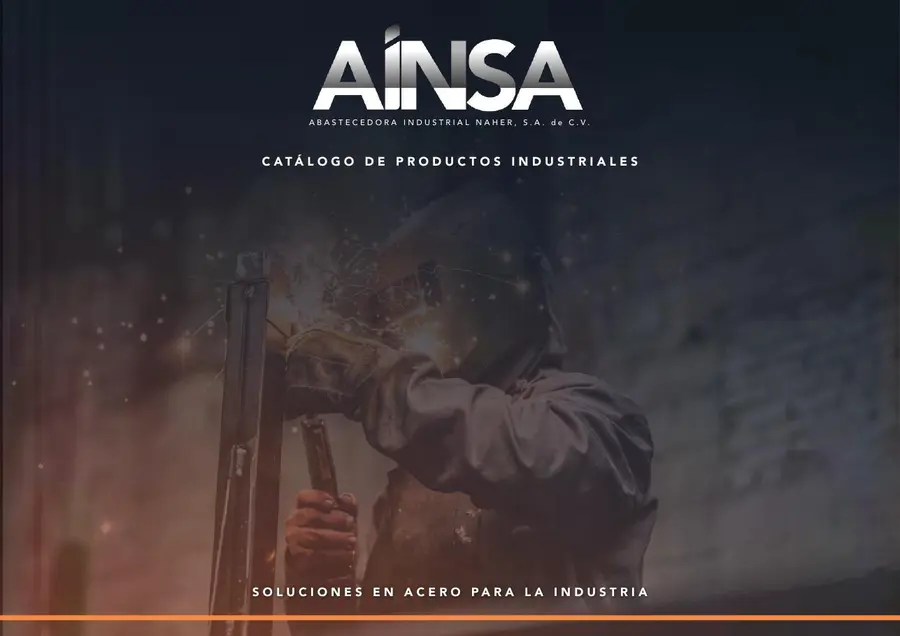

Catálogo 2026
CATÁLOGOS POR ÁREA Y PROVEEDOR
Encuentra el área y proveedor de tu interés. Consulta también el catálogo general AINSA.
01
Acero
Perfiles, láminas y placas
Ver proveedores y productos →02Válvulas
Miller · Worcester · Emsa
Ver proveedores y productos →03Tuberías
Conducción industrial
Ver proveedores y productos →04Conexiones
Soluciones para tus instalaciones
Ver proveedores y productos →05Ferretería
Truper · Milwaukee · Urrea
Ver proveedores y productos →06Tubería contra incendio
Emsa
Ver proveedores y productos →
Consulta técnica
CATÁLOGO DE PRODUCTOS INDUSTRIALES
Revisa el documento en línea o guarda una copia para consulta. Consulta medidas, presentaciones y tablas técnicas de nuestros materiales.